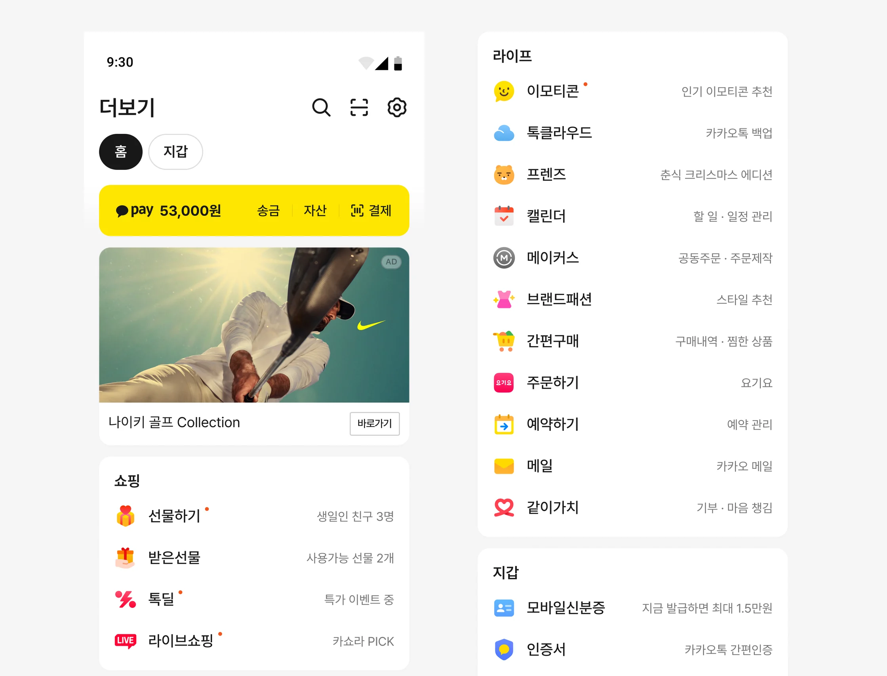
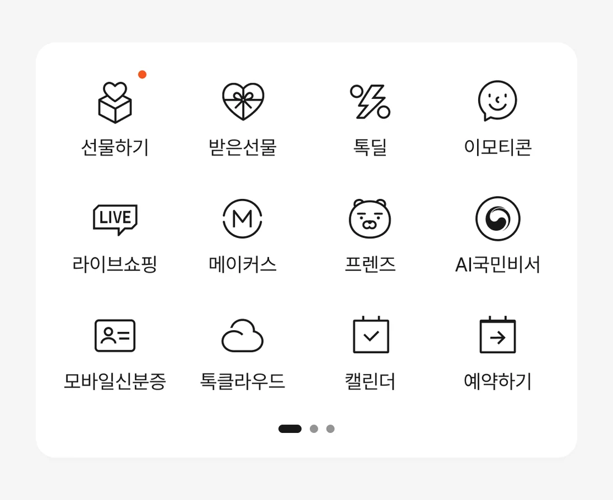
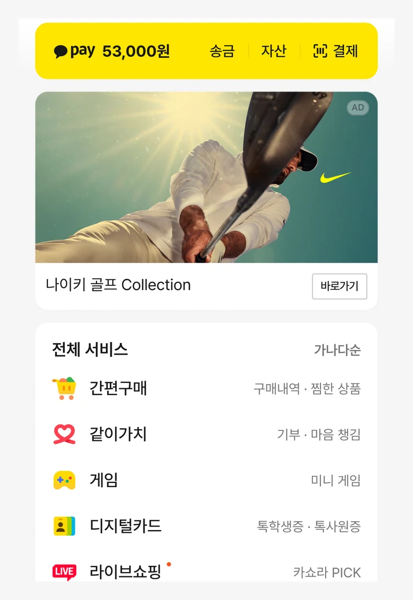
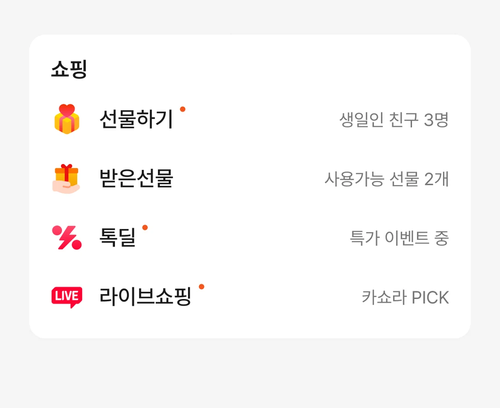

Experiments · Case 02
리스트형 탐색 강화 실험
더보기탭의 서비스는 첫 화면 그리드 밖으로 나가면 거의 눌리지 않았습니다. 이를 구조의 문제로 보고 그리드를 카테고리 리스트로 바꾸는 실험을 발의해, 정렬 규칙이 다른 세 안을 비교했습니다.

출발점
더보기탭에는 결제, 서비스 바로가기, 광고가 한 화면에 함께 있습니다. 사용자의 활동은 대부분 첫 화면에서 끝났고, 광고 아래 영역은 거의 눌리지 않았습니다. 처음에는 스크롤을 유도하는 버튼과 안내를 세 차례 설계했지만, 아래쪽 버튼은 광고를, 위쪽 안내는 결제 영역을 가렸습니다.
같은 시기 배너 영역을 그리드 구조로 바꾸자, 첫 번째 배너에 몰리던 클릭이 69%에서 41%로 분산됐습니다. 유도 장치를 더하기보다 노출 구조를 바꾸는 쪽을 검토하게 된 근거였습니다.
리스트를 제안한 이유
첫 화면 그리드에는 서비스 12개가 보이고, 나머지는 옆으로 넘겨야 나타납니다. 한 화면에 더 많은 서비스를 설명과 함께 보여주면 탐색이 늘어날 것이라고 보고, 탐색 영역만 따로 검증하는 실험을 발의했습니다.
당시 스쿼드는 상단 결제 영역 실험의 결론을 기다리고 있었습니다. 그 결론과 별개로 진행할 수 있도록 범위를 탐색 영역으로 좁혔고, 스쿼드 리뷰에서 채택됐습니다. 다른 일정으로 두 차례 미뤄진 뒤 2026년 5월에 집행했습니다.
디자인
그리드를 카테고리 리스트로 바꾸고, 리스트의 각 서비스에 한 줄 설명을 붙였습니다. 상단 영역은 모두 같게 두고, 안마다 달라지는 것은 정렬 규칙 하나로 제한했습니다.



실험안 C는 B와 같은 리스트에서 쇼핑 카테고리를 광고 위로 올려, 광고를 리스트 중간에 두었습니다. 판정 기준은 실험 전에 정했습니다. 탐색 지표가 좋아도 선물하기 구매전환이나 거래액이 의미 있게 떨어지면 채택하지 않기로 PM·데이터 분석가와 합의했습니다.
결과
세 안 모두 더보기탭 조회는 늘었지만, 서비스 클릭은 줄었습니다. 조회가 늘었다는 것만으로 탐색이 좋아졌다고 보지 않았습니다.
A안은 조회가 가장 많이 늘었지만 선물하기 구매전환이 통계적으로 유의하게 떨어져 제외했습니다. B안은 가드레일을 지키면서 광고 매출이 가장 크게 늘어 채택됐습니다. 채택은 실험의 판정이며, 바로 출시를 뜻하지는 않습니다.
B안 · 대조군 대비 · 광고 매출 +24.9%, 서비스 클릭 −9%, 선물하기 경유 거래액 −10.3%
배치 순서에서 찾은 단서
서비스별로 나눠 보니, 리스트 안에서 놓인 순서와 클릭 변화가 함께 움직였습니다. 선물하기는 A안에서 12번째, B안에서 맨 위에 놓였고, 클릭 감소 폭은 32%에서 11%로 줄었습니다. 받은선물은 10번째에서 2번째로 올라가자 감소가 증가로 바뀌었습니다.
이 경향은 집행 기간 14일 내내 같은 방향이었습니다. 새 화면에 대한 일시적인 호기심보다 배치의 영향일 가능성이 크다고 봤습니다. 광고도 비슷해서, 광고를 리스트 중간으로 옮긴 C안에서는 광고 클릭률과 매출이 함께 떨어졌습니다.
다음 판단
B안으로 광고 매출은 늘었지만, 서비스 클릭 감소가 과제로 남았습니다. 리스트의 탐색성은 살리고 주요 서비스는 첫 화면 그리드에 두는 혼합 구조를 다음 실험으로 설계했습니다. 직접 테스트하던 이 안이 공식 실험안이 됐고, 이어진 과정은 그리드·리스트 혼합 UI 실험에 정리했습니다.
역할
리드한 것
- 문제 재정의와 실험 발의
- 세 실험안의 UI·가이드·디자인 QA
- 결과 해석과 후속 실험 설계
- 디자인 시스템 영향 관리
함께 한 것
- 실험 조건·판정 지표 — PM, 데이터 분석가
- 통계 검정 — 데이터 분석가
- 광고 영향 분석 — 광고 분석 조직